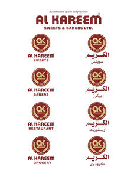

Trade Mark Journal No.2025/033 15 August 2025
UK00004231238 9 July 2025 (1,5,29,30,31,32,33,34,35,43)

- Class 1
- Chemical substances for preserving foodstuffs.
- Class 5
- Food for babies; dietary supplements for humans.
- Class 29
- Meat, fish, poultry and game; meat extracts; preserved, dried and cooked fruits and vegetables; jellies, jams, compotes; eggs, milk and milk products; edible oils and fats; prepared meals; soups and potato crisps.
- Class 30
- Coffee, tea, cocoa, sugar, rice, tapioca, sago, artificial coffee; flour and preparations made from cereals, bread, pastry and confectionery, ices; honey, treacle; yeast, bakingpowder; salt, mustard; vinegar, sauces (condiments); spices; ice; sandwiches; prepared meals; pizzas, pies and pasta dishes.
- Class 31
- Agricultural, horticultural and forestry products; live animals; fresh fruits and vegetables, seeds, natural plants and flowers; foodstuffs for animals; malt; food and beverages for animals.
- Class 32
- Beers; mineral and aerated waters; non-alcoholic drinks; fruit drinks and fruit juices; syrups for making beverages; shandy, de-alcoholised drinks, non-alcoholic beers and wines.
- Class 33
- Alcoholic wines; spirits and liqueurs; alcopops; alcoholic cocktails.
- Class 34
- Tobacco; smokers' articles; matches; lighters for smokers.
- Class 35
- Advertising; business management; business administration; office functions; organisation, operation and supervision of loyalty and incentive schemes; advertising services provided via the Internet; production of television and radio advertisements; accountancy; auctioneering; trade fairs; opinion polling; data processing; provision of business information; retail services connected with the sale of sweets, savouries and bakery products.
- Class 43
- Services for providing food and drink; temporary accommodation; restaurant, bar and catering services; provision of holiday accommodation; booking and reservation services for restaurants and holiday accommodation; retirement home services; creche services.
MUHAMMAD SHABIR SHEIKH